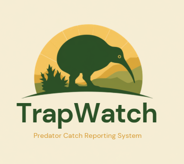

Stats Help
This page shows catch activity aggregated across every trap, all time.
Catches per trap
- a bar for every trap, tallest bar = most catches recoreded
Summary cards
- quick totals across the whole trap network.

Stats
?
☰
Dashboard
Recipients
Traps
Stats
Settings
TOTAL CATCHES [ALL TIME]
-
MOST ACTIVE TRAP
-
AVG CATCHES PER TRAP
-
Catches per trap (all time)